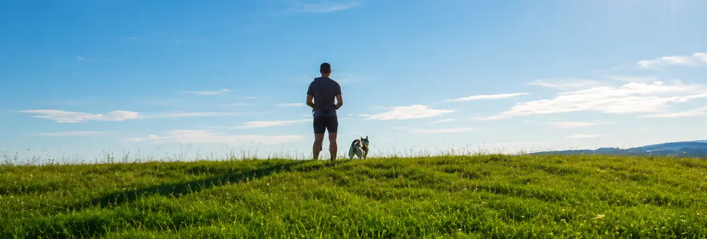

Beh a dogtrekking
Za posledné roky mi bola zo strany organizátorov aj súťažiacich viackrát položená rovnaká otázka: „Môže sa na dogtrekkingu bežať?“
Pravidlá dogtrekkingu beh nikdy nezakazovali, nezakazujú a zakazovať nebudú. Povedzme si však čo to vlastne dogtrekking je. 🙂
Dogtrekking vznikol ako vytrvalostný šport, v ktorom človek so psom prekonáva vzdialenosti s minimálnou dĺžkou 80 km. Tento fakt sám o sebe dosť filtruje množstvo ľudí, ktorí sú pri prechádzaní takejto vzdialenosti schopní bežať. Takisto nemalá povinná výbava a jej hmotnosť nie sú behu veľmi naklonené. Ak však je človek a pes natoľko trénovaný, že napriek týmto prekážkam bežať dokáže, žiadne pravidlo dogtrekkingu mu v tom nebráni.

Vzhľadom na náročnosť týchto akcií a malému počtu ľudí, ktorí si trúfli zúčastniť sa 100 kilometrových dogtrekkingov sa na prilákanie väčšieho počtu ľudí organizovali sprievodné MID a MINI dogtrekkingy. Tým oficiálnym dogtrekkingom stále ostávala trasa LONG. Na Slovensku, pokiaľ ma pamäť neklame, bol posledný takýto dogtrekking v roku 2013, kedy sa prestali u nás organizovať majstrovstvá Slovenskej republiky. Po tomto roku prežili práve už len tieto pôvodne sprievodné podujatia. Nakoľko aktuálna podoba dogtrekkingu u nás nie je tak úplne dogtrekkingom, akcie nie sú viazané ani oficiálnymi pravidlami, čiže jednotliví organizátori si tieto pravidlá môžu mierne prispôsobovať.
Takto sa nám na niektorých akciách začalo objavovať obmedzenie zakazujúce beh na dogtrekkingu. Je tento zákaz vporiadku?
Takúto akciu si organizátor môže upraviť podľa vlastného uváženia. Stále však platí – nezakazuj, čo nedokážeš odkontrolovať. Odkontrolovať beh na čo i len 10 km dlhej trati je nemožné. Žiaden organizátor nemá také množstvo dobrovoľníkov aby pokryl celú trať kontrolórmi. GPS by bolo riešenie drahé a aj tak s malou výpovednou hodnotou nakoľko pre niekoho môže byť rýchlosť 7km/h bežeckým výkonom a pre druhého rýchlou chôdzou. Náhodné tajné kontroly sú síce dobré riešenie, ale stále pokrývajúce veľmi malé úseky z celkovej dĺžky trate. Ako všade, aj pri dogtrekkingu sa nájdu ľudia, ktorí pravidlá dodržovať budú a tí, čo nedostatky využijú vo svoj prospech a tak je dobré im priestor na špekulovanie nedávať.
Dogtrekking je šport a pri športe vyhráva pripravenejší. Aby človek vedel odbehnúť trasu musí trénovať a odmenou za jeho tréning je napríklad aj stupeň víťazov. Na súťaži sa človek snaží zo seba dostať maximum. Zákazom behu sa väčšinou obsadenie stupňov víťazov nezmení, nakoľko trénujúci človek dosiahne vždy lepší výkon ako rekreačný turista. Rozdiel je len v tom, že si súťaž pri obmedzeniach naplno neužije.
Odporcovia behu pri dogtrekkingu často používajú vetu: „Je to trekking, čiže chôdza!“ Je pravda, že pri trekkingu sa chodí. Avšak opäť nás to vracia na začiatok, nakoľko trekking nie je 10 alebo 20 kilometrová prechádzka lesom s fľašou s vodou a lekárničkou ale niekoľkodňová túra s plne naloženým batohom.
Na akcii, ktorá beh nezakazuje sa nájde stále niekto, komu budú bežci vadiť. Na akcii, ktorá beh zakáže sa nájde stále niekto, kto bude spochybňovať, či víťazi dodržiavali pravidlá, … hundroš bude hundrať nech sa deje čokoľvek. 🙂 Tak poďme namiesto hundrania radšej do lesa na sebe zamakať, spraviť niečo pre svoje zdravie a nabudúce možno bude prvé miesto práve tvoje. 😉
← Späť